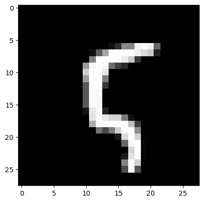

Variational KL
Create a variational Bayesian model based on an existing one from Pytorch
import torch
import torchvision
import matplotlib.pyplot as plt
import torchvision.transforms as transforms
import torch.nn as nn
import torch.optim as optim
import torch.nn.functional as F
import sys
Add the path to our library to the environment variable
['../', '/home/sasha/BMM/bayes_deep_compression/examples', '/home/sasha/anaconda3/lib/python312.zip', '/home/sasha/anaconda3/lib/python3.12', '/home/sasha/anaconda3/lib/python3.12/lib-dynload', '', '/home/sasha/anaconda3/lib/python3.12/site-packages', '/home/sasha/anaconda3/lib/python3.12/site-packages/setuptools/_vendor', '/tmp/tmpfzoa1i3d']
Create a simple classifier, which will be our base model, which we want to train and enforce
class Classifier(nn.Module):
def __init__(self, classes: int = 10):
super().__init__()
self.conv1 = nn.Conv2d(1, 32, kernel_size=3, padding=1)
self.conv2 = nn.Conv2d(32, 64, kernel_size=3, padding=1)
self.pool = nn.MaxPool2d(2, 2)
#self.dropout1 = nn.Dropout2d(0.25)
#self.dropout2 = nn.Dropout2d(0.5)
self.fc1 = nn.Linear(64 * 7 * 7, 128)
self.fc2 = nn.Linear(128, classes)
def forward(self, x):
x = self.pool(F.relu(self.conv1(x)))
#x = self.dropout1(x)
x = self.pool(F.relu(self.conv2(x)))
#x = self.dropout2(x)
x = x.view(-1, 64 * 7 * 7)
x = F.relu(self.fc1(x))
x = self.fc2(x)
return x
Let's see how the distributions in our library work (they do not have to be imported to work and train the Bayesian model).
The first type is the usual distributions on numbers. Let's import the one we use in our model.
The first kind is our familiar distributions on numbers.
from src.methods.bayes.variational.net_distribution import VarBayesModuleNetDistribution #Необязательно импортировать для обучения, оно встроено в нашу байесовскую модель
from src.methods.bayes.base.net_distribution import BaseNetDistributionPruner #Также не обязательно для обучения, но нужен, если вы хотите запрунить модель
We can initialize the distribution weights simply from the model parameters. This uses the recommended initialization of distribution parameters
LogUniformVarDist(param_mus: torch.Size([2]), param_std_log: torch.Size([2]), scale_mus: torch.Size([2]), scale_alphas_log: torch.Size([2]))
These three modules are the core modules for Bayesian learning
from src.methods.bayes.variational.net import LogUniformVarLayer, VarBayesNet #Первым модулоем мы оборачиваем те слои модели, которые мы хотим сделать байесовыми, второй модуль это сама байесовская сеть
from src.methods.bayes.variational.optimization import LogUniformVarKLLoss #Это лосс байесовской модели, который отвечает за тип обучения. Всегда рекомендуется использовать специализированный лосс, но для большинства распределений его нет
Load the MNIST dataset on which we want to train our classifier
test_dataset = torchvision.datasets.MNIST(root='./data', train=True, download=True, transform=transforms.ToTensor())
train_dataset = torchvision.datasets.MNIST(root='./data', train=False, download=True, transform=transforms.ToTensor())
Example of creating a Bayesian model
Let's take a closer look at how to create a Bayesian network
First of all, let's create our base model
Next, we turn some layers into Bayesian using LogUniformVarBayesModule. And create a list of all layers nn.ModuleList([layer1, layer2, ...]) that we want to train (including layers that are not Bayesian). Note that it is possible to wrap the whole network and pass a list consisting only of it.
#bayes_model = BayesModule(module)
#var_module = LogUniformVarBayesModule(module)
var_module1 = LogUniformVarLayer(module.conv1)
#bayes_model = VarBayesModuleNet(module, nn.ModuleList([var_module]))#First argument is the base network, second is a list of all layers (where the right ones are Bayesian)
bayes_model = VarBayesNet(module, nn.ModuleDict({'conv1': var_module1}))
Let's see which parameters base module contains. As you can see it contain only weights for deterministic layers
[('conv2.weight', Parameter containing: tensor([[[[ 0.0234, 0.0521, -0.0416], [-0.0067, 0.0452, 0.0165], [-0.0186, 0.0080, -0.0282]], [[-0.0410, -0.0424, 0.0147],
[-0.0014, 0.0093, -0.0366],
[ 0.0582, 0.0491, -0.0511]],
[[-0.0524, 0.0151, 0.0347],
[ 0.0564, -0.0440, 0.0343],
[ 0.0427, 0.0040, -0.0588]],
...,
('fc1.weight',
Parameter containing:
tensor([[-1.9572e-03, 5.5105e-03, 1.2907e-02, ..., 9.3362e-04,
6.5410e-03, 1.2940e-02],
[-1.3658e-02, 1.1704e-02, -1.0554e-02, ..., 9.2351e-03,
5.5499e-03, 9.6728e-03],
[ 7.4363e-03, -1.3107e-02, 5.7782e-03, ..., -7.1625e-03,
-1.7367e-03, -1.0198e-02],
...,
[-4.1796e-03, -9.8072e-03, 3.3602e-05, ..., -1.6692e-02,
-1.3552e-02, 1.0872e-02],
[-1.0710e-03, 8.8952e-04, -9.1831e-03, ..., -1.2799e-02,
-1.1214e-02, -2.0703e-04],
[-1.3680e-03, 1.8639e-03, -1.3678e-02, ..., -1.7131e-02,
-3.2144e-03, 1.5104e-02]], requires_grad=True)),
('fc1.bias',
Parameter containing:
tensor([ 4.4785e-03, 3.5242e-03, -3.3225e-03, 1.6817e-02, 1.3938e-02,
1.4219e-02, 1.6224e-02, -2.3135e-03, 7.8831e-04, -4.9901e-03,
-2.9009e-03, -5.3911e-03, 2.5817e-05, -1.0779e-02, 6.1594e-04,
6.7744e-03, 6.4704e-03, -1.4375e-02, -3.4684e-04, 6.6257e-03,
8.6150e-03, -3.0658e-03, 7.4117e-03, -1.2159e-03, 1.2959e-02,
1.3157e-02, -3.3168e-03, 1.7615e-02, -1.2785e-02, -1.3743e-02,
7.0512e-03, -2.6989e-03, 1.1465e-02, -1.6236e-02, -1.4229e-02,
-3.0829e-04, 1.6266e-02, 7.7983e-03, 1.4834e-02, 1.6881e-03,
-1.4324e-02, -5.2661e-03, 1.7644e-02, -8.4930e-03, 6.4189e-03,
-4.1196e-03, -6.5473e-03, -1.5205e-02, 3.9125e-04, 1.7055e-02,
-1.8167e-03, 1.0101e-02, 1.5026e-02, -4.0402e-03, -6.2205e-03,
-4.7132e-03, 9.1314e-03, -9.3026e-03, 1.5071e-02, -1.2423e-02,
-1.2544e-02, -2.9424e-03, 9.4202e-03, 1.1231e-02, 2.3752e-05,
9.4760e-04, 8.7380e-03, -9.9631e-03, -8.7878e-03, 1.2486e-02,
3.5142e-03, -1.0424e-02, 3.9431e-03, 5.0228e-03, 5.4710e-03,
-8.6429e-04, -1.6535e-02, 1.5351e-02, -2.1290e-03, 8.6930e-03,
1.1497e-02, 1.5888e-02, -1.7183e-02, 8.6403e-03, -1.2504e-02,
1.4148e-02, 6.4226e-03, 8.1229e-03, -1.4210e-02, 6.0145e-03,
-1.1026e-03, 1.4578e-02, 4.2843e-03, 1.3727e-02, 1.1653e-02,
-8.0806e-03, -6.8637e-03, 1.5679e-03, 1.1133e-02, -1.4571e-02,
-5.8287e-03, 3.7694e-04, -1.5597e-02, 3.9533e-03, -1.1086e-03,
-1.7687e-02, -2.0691e-03, 7.8452e-03, -7.3790e-03, -1.1317e-02,
-2.5809e-03, 1.4929e-02, 4.0213e-03, 1.1033e-02, 7.0566e-03,
5.7826e-03, -1.3471e-02, -6.8864e-03, -4.2468e-03, 1.4285e-02,
2.0096e-03, -1.2925e-02, 2.0085e-03, 1.2672e-02, -5.6027e-03,
1.1251e-02, -1.1526e-02, -1.2023e-02], requires_grad=True)),
('fc2.weight',
Parameter containing:
tensor([[-0.0131, -0.0487, -0.0635, ..., -0.0152, -0.0267, 0.0358],
[ 0.0727, 0.0434, -0.0356, ..., 0.0618, -0.0324, 0.0476],
[-0.0554, -0.0653, -0.0443, ..., 0.0300, 0.0828, -0.0215],
...,
[ 0.0412, 0.0263, -0.0159, ..., -0.0541, 0.0620, 0.0866],
[ 0.0701, 0.0316, 0.0735, ..., -0.0793, 0.0681, -0.0710],
[ 0.0116, -0.0273, 0.0488, ..., 0.0707, 0.0734, -0.0759]],
requires_grad=True)),
('fc2.bias',
Parameter containing:
tensor([ 0.0721, 0.0219, -0.0776, -0.0522, -0.0775, -0.0507, 0.0066, -0.0190,
0.0268, 0.0247], requires_grad=True))]
Let's take a look at the resulting network structure
VarBayesNet(
(base_module): Classifier(
(conv1): Conv2d(1, 32, kernel_size=(3, 3), stride=(1, 1), padding=(1, 1))
(conv2): Conv2d(32, 64, kernel_size=(3, 3), stride=(1, 1), padding=(1, 1))
(pool): MaxPool2d(kernel_size=2, stride=2, padding=0, dilation=1, ceil_mode=False)
(fc1): Linear(in_features=3136, out_features=128, bias=True)
(fc2): Linear(in_features=128, out_features=10, bias=True)
)
(module_dict): ModuleDict(
(conv1): LogUniformVarLayer(
(posterior_params): ParameterList(
(0): Object of type: ParameterDict
(1): Object of type: ParameterDict
(0): ParameterDict(
(param_mus): Parameter containing: [torch.FloatTensor of size 32x1x3x3]
(param_std_log): Parameter containing: [torch.FloatTensor of size 32x1x3x3]
(scale_alphas_log): Parameter containing: [torch.FloatTensor of size 32x1x3x3]
(scale_mus): Parameter containing: [torch.FloatTensor of size 32x1x3x3]
)
(1): ParameterDict(
(param_mus): Parameter containing: [torch.FloatTensor of size 32]
(param_std_log): Parameter containing: [torch.FloatTensor of size 32]
(scale_alphas_log): Parameter containing: [torch.FloatTensor of size 32]
(scale_mus): Parameter containing: [torch.FloatTensor of size 32]
)
)
(prior_params): ParameterList()
)
)
(module_list): ModuleList(
(0): LogUniformVarLayer(
(posterior_params): ParameterList(
(0): Object of type: ParameterDict
(1): Object of type: ParameterDict
(0): ParameterDict(
(param_mus): Parameter containing: [torch.FloatTensor of size 32x1x3x3]
(param_std_log): Parameter containing: [torch.FloatTensor of size 32x1x3x3]
(scale_alphas_log): Parameter containing: [torch.FloatTensor of size 32x1x3x3]
(scale_mus): Parameter containing: [torch.FloatTensor of size 32x1x3x3]
)
(1): ParameterDict(
(param_mus): Parameter containing: [torch.FloatTensor of size 32]
(param_std_log): Parameter containing: [torch.FloatTensor of size 32]
(scale_alphas_log): Parameter containing: [torch.FloatTensor of size 32]
(scale_mus): Parameter containing: [torch.FloatTensor of size 32]
)
)
(prior_params): ParameterList()
)
)
)
The selected network has no prior on parameters
{'weight': None, 'bias': None, 'conv1.weight': None, 'conv1.bias': None}
Let's see what the learning step looks like for the network
In general, it is no different from a regular step, we just need to correctly aggregate losses from several samples on one step
#get one sample
#========
image, label = test_dataset[10]
y = bayes_model(torch.ones_like(image))
kl_loss = LogUniformVarKLLoss()
#========
#list of fit_loss for each sample (we have one sample)
fit_loss = [y.sum()]
#list of dist_loss for each sample (we have one sample)
dist_loss = [kl_loss(posterior = bayes_model.posterior, prior = bayes_model.prior, param_sample_dict = bayes_model.weights)]
beta = 0.1 # scale factor betwenn dist_loss and data_loss
#aggregation result is stored in total_loss attribute, all others are provided for statistic of traininghow important each part is
aggregation_result = kl_loss.aggregate(fit_loss, dist_loss, beta)
out = aggregation_result.total_loss # calculated loss for one step
#optimizer step
optimizer.zero_grad()
out.backward()
optimizer.step()
You can create a network allocation simply from the allocation to parameters and the base network
net_distributon = VarBayesModuleNetDistribution(bayes_model.base_module, bayes_model.posterior)
#Это прунер, которые зануляет веса в зависимости от плотности распределения при 0
net_distributon_pruner = BaseNetDistributionPruner(net_distributon)
#Здесь мы устанавливаем средние веса модели
net_distributon.set_map_params()
#Пруним на основе определенного порога
net_distributon_pruner.prune(1.9)
#get basic model for evaluation
eval_model = net_distributon.get_model()
We got a model with the same architecture as the original one
Parameter containing:
tensor([[[[-0.2201, -0.1363, 0.0124],
[ 0.2032, -0.1667, 0.0023],
[ 0.0774, 0.2318, -0.1995]]],
[[[ 0.0459, -0.1258, 0.0935],
[-0.1269, 0.0314, -0.0996],
[-0.0275, -0.2574, 0.1112]]],
...
[[[ 0.1589, 0.2691, 0.0279],
[ 0.1339, -0.1604, 0.0495],
[-0.2156, -0.0669, 0.1900]]],
[[[ 0.1797, -0.0371, -0.1127],
[ 0.3198, 0.0628, -0.2585],
[-0.1933, 0.1206, -0.2441]]],
[[[-0.2437, -0.0979, 0.0240],
[-0.2082, -0.0979, 0.2999],
[ 0.0398, -0.1725, -0.2454]]]], requires_grad=True)
OrderedDict([('base_module.conv1.weight',
tensor([[[[-0.2201, -0.1363, 0.0124],
[ 0.2032, -0.1667, 0.0023],
[ 0.0774, 0.2318, -0.1995]]],
[[[ 0.0459, -0.1258, 0.0935],
[-0.1269, 0.0314, -0.0996],
[-0.0275, -0.2574, 0.1112]]],
[[[ 0.1811, 0.0643, 0.0043],
[-0.0697, -0.3153, 0.1617],
[-0.2736, 0.1742, 0.2239]]],
[[[-0.0079, 0.1319, 0.1114],
[-0.0743, -0.0305, 0.3261],
[ 0.1474, 0.2353, -0.0412]]],
...
('module_list.0.posterior_params.1.param_mus',
tensor([ 0.0243, 0.0314, 0.3040, -0.0936, -0.3259, 0.0230, -0.0320, 0.3027,
-0.0815, -0.1082, 0.0233, 0.0705, -0.0668, -0.1233, 0.0172, 0.0904,
0.0125, -0.0182, -0.3289, -0.0261, -0.1676, 0.1954, 0.2275, 0.2331,
0.0743, -0.0876, -0.1143, -0.2752, -0.2665, -0.2323, -0.0370, -0.0340])),
('module_list.0.posterior_params.1.param_std_log',
tensor([-7.1025, -5.3064, -4.9560, -4.8693, -5.6517, -5.9971, -5.8863, -6.9338,
-5.7341, -6.2144, -4.6343, -6.0424, -5.1508, -5.0778, -5.0742, -6.0448,
-5.0951, -5.4542, -4.6547, -6.1729, -5.9752, -4.8851, -4.7508, -4.7064,
-4.9404, -5.2045, -5.0169, -5.2111, -5.6868, -8.3506, -6.1773, -5.0066])),
('module_list.0.posterior_params.1.scale_alphas_log',
tensor([-2.9490, -3.2520, -3.3946, -3.4951, -3.4896, -3.1572, -2.0109, -3.6435,
-2.2213, -2.4887, -2.2303, -2.1010, -2.7849, -3.4162, -3.8819, -2.5487,
-3.1461, -3.7327, -2.4182, -2.5243, -2.5713, -3.1543, -2.8069, -3.7425,
-3.3890, -3.8608, -3.9808, -2.6061, -2.3058, -3.8742, -2.2982, -2.9821])),
('module_list.0.posterior_params.1.scale_mus',
tensor([1., 1., 1., 1., 1., 1., 1., 1., 1., 1., 1., 1., 1., 1., 1., 1., 1., 1.,
1., 1., 1., 1., 1., 1., 1., 1., 1., 1., 1., 1., 1., 1.]))])
Forward is done on the last saved sample. Note that we do not copy the data anywhere, and the model is not encapsulated. Therefore, in order to unlink them, they must be copied
print(bayes_model(torch.zeros_like(image)))
#print(bayes_model(torch.zeros_like(image), sample = False))
print(module(torch.zeros_like(image)))
tensor([[ 0.0305, -0.0716, -0.1202, -0.1129, -0.1449, -0.0620, -0.0262, -0.0984,
0.0281, -0.0110]], grad_fn=<AddmmBackward0>)
tensor([[ 0.0305, -0.0716, -0.1202, -0.1129, -0.1449, -0.0620, -0.0262, -0.0984,
0.0281, -0.0110]], grad_fn=<AddmmBackward0>)
We suggest to run this example on GPU
device(type='cuda')
Example of training a Bayesian model
Next we import several modules for training
from src.methods.bayes.variational.trainer import VarBayesTrainer, VarTrainerParams, Beta_Scheduler_Plato, CallbackLossAccuracy #Сам тренер, Параметры тренера, Планировщик beta(коэффициент сооьношения между обычным лоссом и байесовским), и callback для метрики точности
from src.methods.report.base import ReportChain #Это просто список callback
from src.methods.report.variational import VarBaseReport #Этот модуль callback просто выводит каждый шаг данные от тренера
BATCH_SIZE=1000
EPOCHS=4000
LR = 1e-3 #5e-4
# Split the training set into training and validation sets
VAL_PERCENT = 0.2 # percentage of the data used for validation
SAMPLES = 10
BETA = 0.01 #5e-5 #0.01
BETA_FAC = 5e-1
PRUNE = 1.9#1.99, 2.1, 1.9
PLATO_TOL = 20
"""
base_module = Classifier()
var_module = LogUniformVarBayesModule(base_module)
model = VarBayesModuleNet(base_module, nn.ModuleList([var_module]))
"""
base_module = Classifier()
#var_module = LogUniformVarLayer(base_module)
var_module1 = LogUniformVarLayer(base_module.conv1)
#bayes_model = VarBayesModuleNet(module, nn.ModuleList([var_module])) #Первый аргумент базовая сеть, второй список всех слоев (где нужные из них являются байесовыми)
model = VarBayesNet(base_module, {'conv1': var_module1})
#model = VarBayesNet(base_module, {'': var_module})
optimizer = optim.Adam(model.parameters(), lr=LR)
#Первый лосс это обычный лосс на данные, второй лосс это лосс байесковской модели
fit_loss = nn.CrossEntropyLoss()
kl_loss = LogUniformVarKLLoss()
#Используем планировщик коэффицента пропорциональности между fit_loss и kl_loss
beta = Beta_Scheduler_Plato(BETA, BETA_FAC, PLATO_TOL)
beta_KL = Beta_Scheduler_Plato(beta.beta, 1 / BETA_FAC, PLATO_TOL, ref = beta, threshold=1e-4)
#Данная функция будет выполнятся после каждого шага тренера, соответсвенно нам требуется сделать шаг планировщика и изменить соотвествующий коэффициент
def post_train_step(trainer: VarTrainerParams, train_result: VarBayesTrainer.TrainResult):
beta.step(train_result.fit_loss)
beta_KL.step(train_result.dist_loss)
trainer.params.beta = float(beta)
#print(model.base_module.state_dict().keys())
val_size = int(VAL_PERCENT * len(train_dataset))
train_size = len(train_dataset) - val_size
t_dataset, v_dataset = torch.utils.data.random_split(train_dataset,
[train_size,
val_size])
# Create DataLoaders for the training and validation sets
train_loader = torch.utils.data.DataLoader(t_dataset,
batch_size=BATCH_SIZE,
shuffle=True,
pin_memory=True)
eval_loader = torch.utils.data.DataLoader(v_dataset,
batch_size=BATCH_SIZE,
shuffle=False,
pin_memory=True)
model.to(device)
train_params = VarTrainerParams(EPOCHS, optimizer,fit_loss, kl_loss, SAMPLES, PRUNE, BETA, {'accuracy': CallbackLossAccuracy()})
#Если хотим сделать бету фиксированной, то нунжо убрать аргумент [post_train_step]
#trainer = VarBayesTrainer(train_params, ReportChain([VarBaseReport()]), train_loader, eval_loader, [post_train_step])
trainer = VarBayesTrainer(train_params, ReportChain([VarBaseReport()]), train_loader, eval_loader)
trainer.train(model)
0%| | 1/4000 [00:01<1:41:30, 1.52s/it]
Epoch [1/4000],Loss:25.183677673339844, KL Loss: 2314.0859375. FitLoss: 2.042818784713745,Accuracy:0.4181125,Validation Loss:24.66039276123047,Validation Accuracy:0.673, Prune parameters: 0.0/320,Beta: 0.01
0%| | 2/4000 [00:02<1:35:21, 1.43s/it]
Epoch [2/4000],Loss:24.183488845825195, KL Loss: 2310.0380859375. FitLoss: 1.0831090211868286,Accuracy:0.7423624999999996,Validation Loss:23.792869567871094,Validation Accuracy:0.787, Prune parameters: 0.0/320,Beta: 0.01
0%| | 2/4000 [00:03<1:56:51, 1.75s/it]
Evaluate model using trainer
Let's look at the quality of the trained model on the validation dataset
val_loss = 0.0
val_acc = 0.0
PRUNE = 1.0
test_loader = torch.utils.data.DataLoader(test_dataset,
batch_size=BATCH_SIZE,
shuffle=False,
pin_memory=True)
kl_loss = LogUniformVarKLLoss()
trainer.params.prune_threshold = PRUNE
test_result = trainer.eval(model, test_loader)
acc = test_result.custom_losses['val_accuracy']
print(f'Loss:{test_result.val_loss}, KL Loss: {test_result.dist_loss}, FitLoss: {test_result.fit_loss}, Accuracy {acc}, Prune parameters: {test_result.cnt_prune_parameters}/{test_result.cnt_params}')
Loss:16906.90234375, KL Loss: 1690681.375, FitLoss: 0.09073139727115631, Accuracy 0.98, Prune parameters: 221821.0/421642
Obtaining a deterministic model
Let's lock the model by its built-in method. As a deterministic model we choose the MAP estimator
Let's look at how the model categorizes the numbers
image, label = test_dataset[100]
plt.imshow(image.permute(1, 2, 0), cmap="gray")
print("Label:", label)
Label: 5

It classify it right and deterministic
torch.return_types.max(
values=tensor([2.1405], device='cuda:0'),
indices=tensor([5], device='cuda:0'))